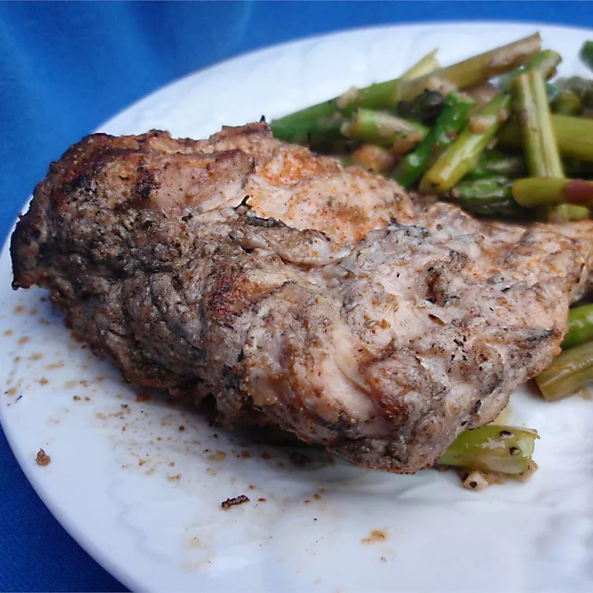

Home
Chicken Marinade

I got this from a friend of mine when she made it at one of her picnics. It's so easy and delicious! I recently made it at our cook-out and everyone asked me how I made it.
Ingredients:
- 6 boneless, skinless chicken breast halves
- ⅓ cup olive oil
- ⅓ cup lemon juice
- 1 (.7 ounce) package Italian-style dressing mix
Steps:
- Place the chicken breasts between sheets of waxed paper and pound until thin. Remove breasts and place into a large resealable plastic bag.
- In a medium mixing bowl, combine the oil, lemon juice, and Italian-style seasoning. Pour mixture into the plastic bag containing the chicken.
- Seal the plastic bag and shake gently to ensure that all the chicken is in contact with the marinade. Refrigerate marinated chicken pieces overnight or up to two days.
- When ready to cook, preheat grill and lightly oil grate. Place chicken breasts on the grill and cook for about 5 to 7 minutes per side.